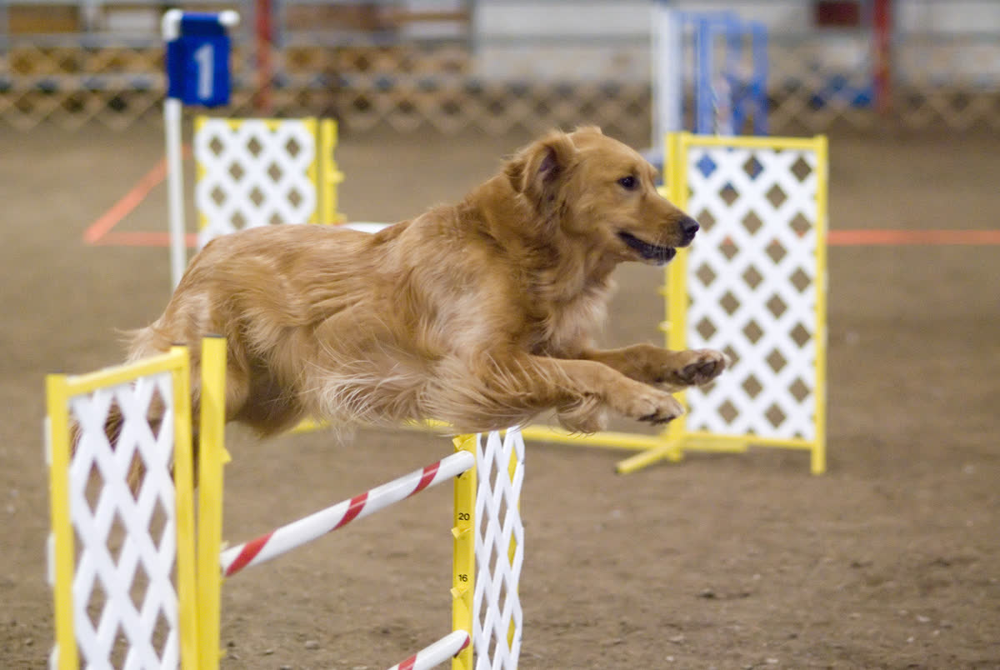

Suchen statt hochdrehen
Futterbeutel, Geruchsspuren oder versteckte Leckerchen lasten viele Hunde besser aus als immer mehr Tempo.
Hunde sind Rudeltiere. Sie leben von Nähe, Routine und der Beziehung zu ihren Menschen. Ein Hund, der „nur“ Futter und Auslauf bekommt, hat nicht genug.

Gute Beschäftigung ist nicht „auspowern bis zum Umfallen“, sondern gemeinsame Orientierung: suchen, warten, verstehen, wieder runterfahren.
Futterbeutel, Geruchsspuren oder versteckte Leckerchen lasten viele Hunde besser aus als immer mehr Tempo.
Rückruf, Decke, Warten, Tauschen und ruhiges Anleinen sind keine Kunststücke, sondern echte Sicherheit im Alltag.
Nach Beschäftigung braucht ein Hund Schlaf und Reizpause. Dauerprogramm macht viele Hunde nicht glücklich, sondern nervös.
Hunde sind hochsoziale Tiere. In der Natur leben sie in Familienverbänden, schlafen zusammen, jagen zusammen, kommunizieren ständig. Ein Hund, der den Großteil des Tages allein verbringt, lebt gegen seine Natur.
Was Hunde brauchen – jeden Tag:
Ein Garten ist gut, wenn ein Hund zusätzlich schnüffeln, dösen oder spielen kann. Er ersetzt aber nicht den täglichen Auslauf in anderer Umgebung. Die Tierschutz-Hundeverordnung verlangt ausreichend Auslauf im Freien, Umgang mit der Betreuungsperson und regelmäßig möglichen Kontakt zu Artgenossen. Auslauf und Sozialkontakte müssen zu Rasse, Alter und Gesundheitszustand des Hundes passen.
Wichtig ist deshalb nicht eine starre Minutenformel, sondern die Wirkung: Der Hund muss raus aus der immer gleichen Haltungsumgebung. Ein Garten ist schnell bekanntes Revier. Spaziergänge bringen neue Gerüche, Orientierung, Bewegung, Begegnungen und gemeinsames Erkunden. Genau das fehlt, wenn ein Hund zwar draußen ist, aber sein Grundstück praktisch nie verlässt.
Ein Garten ist nach kurzer Zeit bekanntes Gelände. Er ersetzt keine Spaziergänge, keine neuen Gerüche und keine gemeinsame Erkundung.
Wenn dein Alltag keine verlässliche Betreuung erlaubt, ist Warten die bessere Entscheidung als ein Hund, der acht Stunden still leidet.
Die Empfehlung von TASSO, dem Deutschen Tierschutzbund und nahezu allen Fachleuten ist eindeutig: Erwachsene Hunde sollten nicht länger als 4–5 Stunden am Stück allein bleiben. In Ausnahmen – nicht als Regel – bis zu 6 Stunden.
8 Stunden oder mehr, wie ein normaler Arbeitstag? Nicht vertretbar. Auch nicht mit einem zweiten Hund, auch nicht mit einem großen Garten. Ein Hund, der den ganzen Tag wartet, ist kein zufriedener Hund – auch wenn er nichts zerstört und nicht in die Wohnung macht.
Wer an den meisten Tagen 8 Stunden oder länger außer Haus ist und niemand sich um den Hund kümmert, für den passt ein Hund in dieser Lebensphase nicht. Das ist keine Moralkeule – das ist Tierschutzrealität.
| Posten | Einmalig | Jährlich |
|---|---|---|
| Anschaffung (Tierheim / Züchter) | 200–2.000 € | – |
| Erstausstattung (Leine, Napf, Körbchen, Box) | 200–500 € | – |
| Futter (hochwertiges Nassfutter / Trockenfutter) | – | 600–1.500 € |
| Tierarzt (Impfungen, Entwurmung, Vorsorge) | – | 200–500 € |
| Hundesteuer (je nach Gemeinde) | – | 50–200 € |
| Haftpflichtversicherung | – | 50–100 € |
| Krankenversicherung (optional, empfohlen) | – | 250–600 € |
| Unvorhergesehenes (Notfall-OP, Medikamente) | – | 0–3.000 € |
| Gesamt über 12 Jahre | ca. 12.000–20.000 € | |
Angaben: Durchschnittswerte für mittelgroße Hunde. Große Rassen, chronische Erkrankungen oder Spezialfutter können deutlich teurer werden. Quelle: Zusammenstellung aus Angaben des Deutschen Tierschutzbundes, TASSO e. V. und der Bundestierärztekammer.
Kastration ist beim Hund keine Routine, sondern eine Einzelfallentscheidung – anders als bei Katzen. Bei Rüden kann sie sinnvoll sein, wenn hormonbedingtes Problemverhalten vorliegt (Aggression, exzessives Markieren, Streunen). Bei Hündinnen schützt sie vor Gebärmutterentzündung (Pyometra) und senkt das Risiko für Mammatumoren, wenn sie vor der zweiten Läufigkeit erfolgt. Ausführliche Infos zu Eingriffsarten, Kosten und Mythen findest du auf der Seite Kastration.
Die Kosten nach der aktuellen Gebührenordnung für Tierärzte (GOT 2022): Rüde ca. 200–400 Euro, Hündin ca. 400–800 Euro – abhängig von Größe, Gewicht und Praxis.
Auf dem Land weit verbreitet: der Hund lebt draußen, auf dem Hof, vielleicht im Zwinger. Das ist nicht automatisch verboten, aber es ist auch kein Freibrief. Die Tierschutz-Hundeverordnung regelt Mindestanforderungen: Zwingergröße abhängig von der Schulterhöhe, ausreichend Auslauf im Freien außerhalb des Zwingers, Witterungsschutz, Umgang mit einer Betreuungsperson und regelmäßig möglichen Kontakt zu Artgenossen.
Wichtig: Seit der Reform ist vor allem die Anbindehaltung grundsätzlich verboten. Zwingerhaltung bleibt rechtlich möglich, aber nur als enger Rahmen, nicht als Dauerersatz für Alltag, Beziehung und Bewegung. Ein Hund, der den größten Teil seines Lebens allein hinter Gittern oder auf demselben Hofstück verbringt, bekommt nicht das, was die Verordnung eigentlich meint.
Dass man solche Haltungen trotzdem noch sieht, liegt nicht daran, dass sie automatisch in Ordnung wären. Oft wird erst kontrolliert, wenn jemand konkrete Hinweise gibt. Dazu kommt die alte Hofhund-Logik: „Der hat doch Platz und frische Luft.“ Platz ersetzt aber keinen Auslauf außerhalb, keine Beschäftigung und keinen sozialen Anschluss.
Problematisch wird es, wenn der Hund als Alarmanlage gehalten wird. Den ganzen Tag allein auf dem Hof, ohne Beschäftigung, ohne echte Beziehung zu Menschen. Ein Hund, der nur bellt, wenn jemand kommt, und ansonsten allein existiert, ist kein glücklicher Hund – egal wie groß der Garten ist. Mehr über die Psychologie hinter solcher Tierhaltung.
Etwa 40 % der Hunde in Deutschland sind übergewichtig. Die Ursache ist fast immer menschengemacht: zu viel Futter, zu viele Leckerlis, zu wenig Bewegung. Übergewicht belastet Gelenke, Herz und Stoffwechsel und verkürzt die Lebenserwartung messbar.
Viele Hunde haben ab dem dritten Lebensjahr Zahnstein, Zahnfleischentzündungen oder lockere Zähne. Unbehandelt führt das zu Schmerzen, Futterverweigerung und Infektionen. Regelmäßige Zahnkontrolle beim Tierarzt ist Pflicht – auch wenn der Hund sich nichts anmerken lässt.
Hüftdysplasie (HD) und Ellbogendysplasie (ED) sind bei vielen großen Rassen verbreitet und teilweise erblich bedingt. Symptome: Lahmheit, steifer Gang, Bewegungsunlust. Je früher erkannt, desto besser behandelbar. Beim Kauf eines Rassehundes: unbedingt auf HD/ED-Befunde der Elterntiere achten.
Futtermittelunverträglichkeiten, Umweltallergien, Flohspeichelallergie – Hunde reagieren häufig mit Juckreiz, Ohrenentzündungen, Pfotenlecken oder Fellverlust. Die Diagnostik ist oft langwierig und die Behandlung teuer.
Manche Hunderassen – Möpse, Französische Bulldoggen, Teacup-Hunde – haben zusätzlich angezüchtete Gesundheitsprobleme. Wenn du Symptome beobachtest, die dich beunruhigen, schau auf die Notfall-Seite.
Erwachsene Hunde sollten nicht länger als 4–5 Stunden am Stück allein bleiben. Regelmäßige 8 Stunden oder mehr sind aus Tierschutzsicht nicht vertretbar.
Für einen mittelgroßen Hund sind laufend etwa 100-200 Euro pro Monat realistisch. Über ein Hundeleben können 12.000-20.000 Euro zusammenkommen.
Wa(h)re Haustier(liebe) ist ein privates Projekt – werbefrei, unabhängig und ehrenamtlich. Die laufenden Kosten für Hosting, Domain und Recherche tragen wir selbst. Wenn dir diese Seite geholfen hat, freuen wir uns über Unterstützung – für uns oder direkt für den Tierschutz:
Spenden an uns als Privatpersonen sind nicht steuerlich absetzbar. Die Streunerhilfe Plau e. V. ist ein eigenständiger gemeinnütziger Verein – dort ist deine Spende steuerlich absetzbar und fließt direkt in die Versorgung und Kastration von Streunerkatzen.